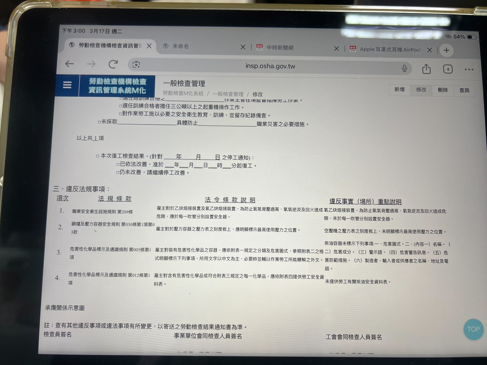
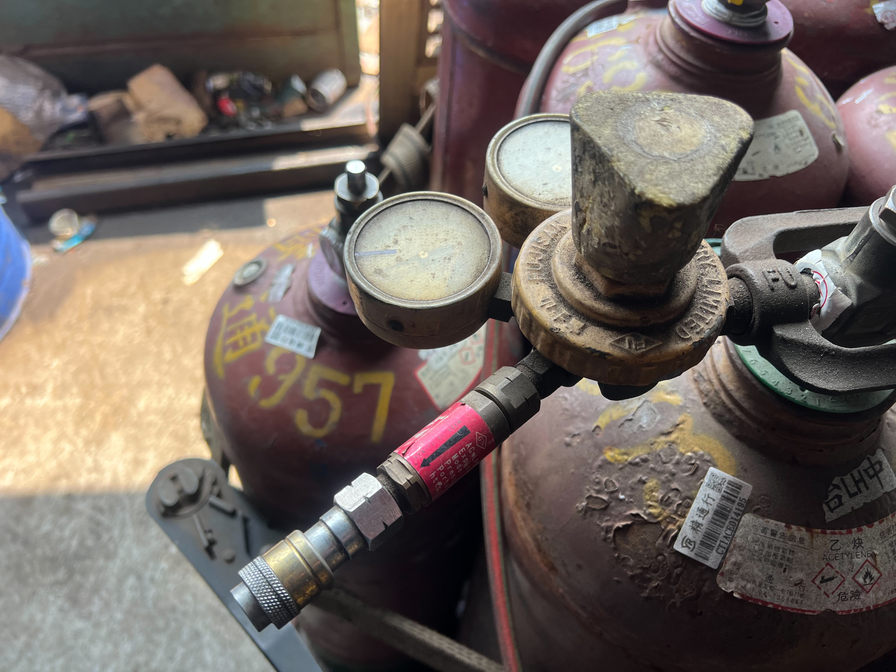
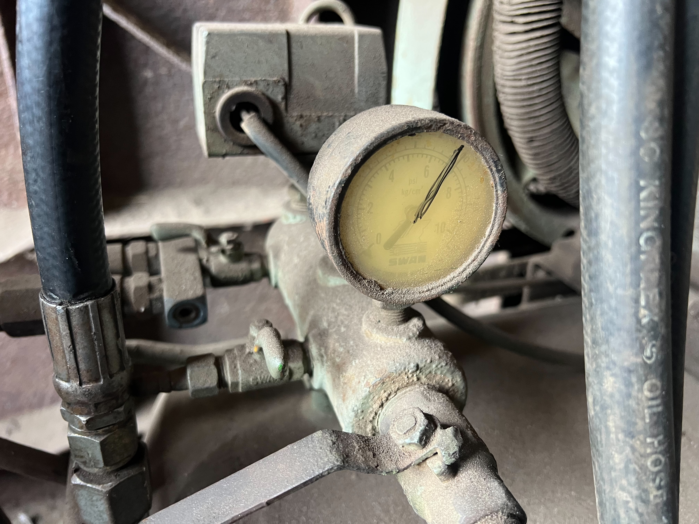
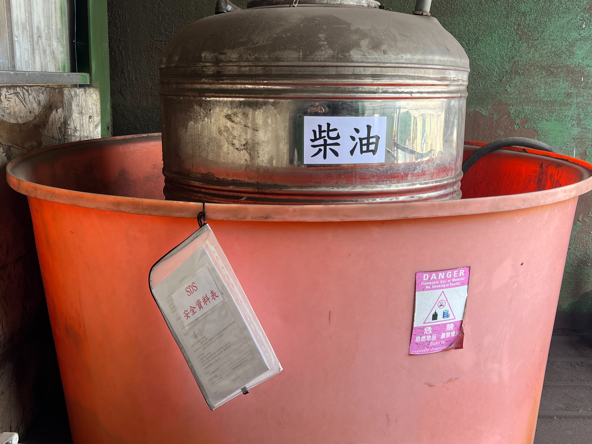
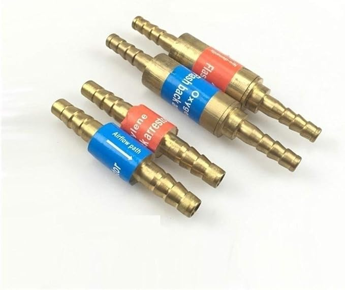
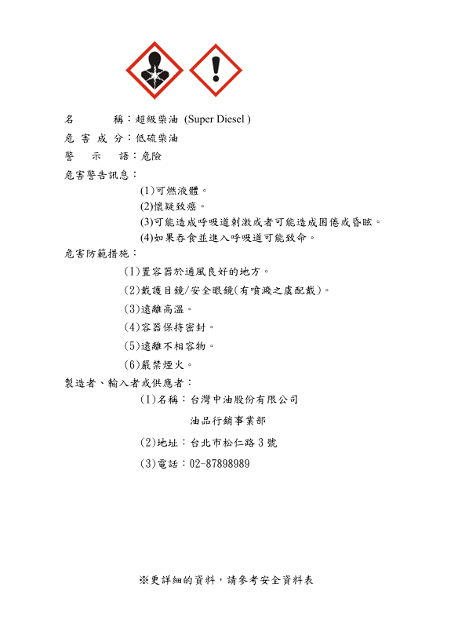

大豐環保科技股份有限公司
2026年Q1 職安衛委員會報告
依《職業安全衛生管理辦法》第12條
一、擬訂職業安全衛生政策
提出建議，宣示公司環安衛承諾
(1) 遵守法規 減少衝擊
確保作業中對環境造成最低衝擊，承諾遵守相關環安衛法律、法規、標準及其他要求。
(2) 節能減碳 推動綠能
珍惜各項資產能源，提高污染防治效能，推動減碳減廢創造綠色能量。
(3) 危害預防 促進健康
推動風險管理、做好傷害疾病預防、健康檢查與促進，降低危害事故發生，確保員工與承攬商、訪客之安全，建構安全、健康、零災害之環境。
(4) 落實溝通 持續改善
將環保、安全衛生觀念融入員工、供應商、承攬商及利害關係者之訓練或告知，落實全員對環安衛的認知及緊急應變能力。
(5) 永續經營 善盡責任
持續改善環安衛系統，善盡對客戶、員工及其他利害關係者的責任。
二、協調、建議職業安全衛生管理計畫
2026年度計畫執行進度
第一季執行重點（已執行）
道路安全宣導講習
台中、全興員工在職訓練（含消防）
健康管理（每月）：職業護理師臨場服務衛教
第二季執行重點（規劃中）
上半年作業環境監測
危害鑑別與風險管理
年度在職員工健檢
三、審議安全衛生教育訓練實施計畫
職業安全衛生法第32條 — 雇主對勞工應施以從事工作與預防災變所必要之安全衛生教育及訓練
2026年度訓練項目執行狀況
| # | 訓練項目 | 對象 | 計畫時程 | 狀態 | 執行日期 |
|---|---|---|---|---|---|
| 1 | 職業安全衛生講習 & 道路安全宣導 | 全體員工 | 第一季 | 待執行 | 3月30日 |
| 2 | 台中消防教育訓練 | 台中總公司 | 第一季 | 待執行 | 3月30日 |
| 3 | 全興消防教育訓練 | 全興廠員工 | 第一季 | 待執行 | 3月30日 |
四、審議作業環境監測計畫
監測結果及採行措施
法源依據：勞工作業環境監測實施辦法第7～9條 — 中央空調室內場所應每六個月監測 CO₂ 濃度一次以上；噪音達 85dB 以上作業場所應每六個月監測一次；室內採光照明應定期監測記錄。
2026年度監測計畫：上半年度實施監測（預計四、五月執行）— 台中總公司 & 全興廠
監測項目一覽
| 監測項目 | 台中總公司 | 彰化全興廠 | 法規標準 | 監測結果 | 預計時間 |
|---|---|---|---|---|---|
| 噪音（dB） | — | 處理一課、處理二課、造粒課 | ≤ 85 dB | 待執行 | 2026年4～5月 |
| 照度（lux） | 共 9 處 | 共 5 處 | ≥ 200 lux | 待執行 | 2026年4～5月 |
| CO₂ 濃度（ppm） | 共 9 處 | — | ≤ 1000 ppm | 待執行 | 2026年4～5月 |
五、審議健康管理、職業病預防及健康促進事項
職護臨場服務 · 健康檢查 · 職業病預防
★ 本季重點：職護臨場衛教服務 — 執行新進人員及年度健檢分級人員衛教
📅 三月臨場服務日期
台中總公司：03/24（週一）
13:00 ～ 15:00
全興廠：日期待確認
👤 服務對象
● 新進人員衛教輔導
● 年度健檢分級追蹤人員
● 職業病預防諮詢
🎯 2026年全年目標
職護臨場服務：12次／年
目前進度：3次（進度25%）
在職員工健檢：1次／年
上半年執行
職護臨場服務紀錄照片

職護臨場衛教服務（2026年3月）
六、審議各項安全衛生提案
2026年度安全衛生改善方案｜負責單位：法務環安課
方案一：降低交通事故風險
交通事故（倒車碰撞、追撞、上下班通勤）
風險危害分析：交通事故2025年35件，佔全年66%；三年增長 +133%
- 導入行車紀錄器 AI 分析系統，針對高風險駕駛行為（急煞、超速、分心）自動預警
- 推動倒車作業標準程序（查看 → 喇叭示警 → 緩速後退）
- 每季進行駕駛安全講習，含實際案例討論
🎯 目標：降低交通事故件數至25件以下（減少30%），減少倒車碰撞類事故
預期效益：減少倒車碰撞類事故，降低公司損失工時
本季進度：審議及規劃中
方案二：推動虛驚通報制度
潛在危害認知不足
風險危害分析：通報量仍偏低，無法有效預警潛在風險
- 建立虛驚通報獎勵機制（每件通報給予獎勵點數或禮券）
- 設定目標：月均虛驚通報5件以上
- 每月彙整虛驚案例進行安全宣導，讓通報者感受到「通報有用」
🎯 目標：提升虛驚通報量至年均60件，透過早期發現潛在危害，預防實際事故發生
預期效益：透過早期發現潛在危害，預防實際事故發生
本季進度：審議及規劃中
方案三：樓梯通道防滑工程與行走安全強化
跌倒／墜落事故（骨折等重大傷害）
風險危害分析：跌倒/墜落事故6件，其中3件重大傷害合計損失210天（佔全年損失工日58.5%）；主因為雨天地滑、未穿安全鞋、未使用扶手
- 清查各廠區樓梯與通道防滑設施，雨天高風險區域加裝防滑條與警示標誌
- 落實安全鞋穿戴規範，搬運重物時禁止使用樓梯（改用電梯或推車）
- 地面棧板散落立即清理，列入自動檢查項目
🎯 目標：降低跌倒墜落事故至2件以下，減少因骨折等重大傷害造成的長期損失工日
預期效益：減少因骨折等重大傷害造成的長期損失工日
本季進度：審議及規劃中
方案四：外籍員工安全教育強化方案（LOTO 多語言）
被夾被捲事故（含外籍員工語言隔閡）
風險危害分析：三年被夾被捲事故5件中3件為外籍員工（含1件永久失能），主因為未使用規定工具、未待機台完全停止即伸手操作，語言隔閡可能導致 SOP 理解不足、安全告知未確實傳達
- 建立多語言 LOTO 教育教材（中文/泰文/越南文），以實拍照片＋圖示為主
- 進行實機演練與評核，確認正確操作；外籍員工入職及每年複訓增加實機操作演練
- 機台旁張貼多語言警示標誌及 LOTO 八步驟圖卡，以紅色警示標明「未停止禁止伸手」
- 推動 Buddy 制度：每位外籍員工配對一位本籍員工指導，新進外籍員工前三個月隨行指導
🎯 目標：杜絕外籍員工因語言隔閡或 SOP 理解不足導致的被夾被捲事故，外籍員工重大工安事故歸零
預期效益：杜絕外籍員工因語言隔閡或 SOP 理解不足導致的被夾被捲事故
本季進度：審議及規劃中
七、審議自動檢查及安全衛生稽核事項
本季受勞動檢查廠場 & 內部自動稽核
總覽：本季受勞檢之廠場
| # | 廠場名稱 | 受檢日期 | 缺失數 | 正式公文 | 改善報告 | 結案 |
|---|---|---|---|---|---|---|
| 1 | 和美站 | 115/03/17 | 4 | 未收到 | 未回覆 | 否 |
📍 和美站（03/17）— 勞動檢查詳細紀錄
1-1. 勞動檢查記錄照片

勞動部職安署勞動檢查資訊管理系統 — 違規通知（2026.3.17）
1-2. ✅ 已完成改善項目
| # | 法規依據 | 法令條款說明 | 缺失內容 | 改善狀態 |
|---|---|---|---|---|
| 1 | 職業安全衛生設施規則 第209條 |
雇主對乙炔熔接裝置，為防止氣體逆流回火，應於每一吹管分別設安全器。 | 未於每一吹管分別設安全器 | 已設置回火防止器（仍缺止回閥） |
| 2 | 鍋爐及壓力容器安全規則 第30條第1項第3款 |
壓力容器之壓力表刻度板上，應明顯標示最高使用壓力之位置。 | 空壓機壓力表刻度板上，未明顯標示最高使用壓力之位置 | 已完成標示改善 |
| 4 | 危害性化學品標示及通識規則 第12條第1項 |
對含有危害性化學品者，應依附表提供勞工安全資料表。 | 未提供勞工有關柴油安全資料表（SDS） | 已完成 SDS 提供 |
1-3. 改善照片紀錄
✅ 已完成改善

氧乙炔回火防止器 — 改善後

空壓機最高壓力標示 — 改善後

柴油之安全資料表 — 改善後
1-4. ⚠ 待完成改善項目
| # | 法規依據 | 法令條款說明 | 缺失內容 | 備註／費用 |
|---|---|---|---|---|
| 1 | 職業安全衛生設施規則 第209條 |
雇主對乙炔熔接裝置，為防止氣體逆流回火，應於每一吹管分別設安全器。 | 乙炔熔接裝置每一吹管，未設置回火防止器（止回閥尚缺） | 「止回閥」尚缺需購置 約 $750／組 |
| 3 | 危害性化學品標示及通識規則 第5條第1項 |
裝有危害性化學品之容器，應標示名稱、主要成分、警示語、危害警告訊息、防範措施、製造者資料等。 | 某油品容器未完成危害性化學品容器標示（名稱、危害圖式、警示語等） | 需完成容器標示作業，向供應商詢問資料 |
1-5. 需求設備或文件照片
待完成改善項目之需求設備或文件示意

止回閥 — 需安裝於吹管接口

危害性化學品之容器標示 — 需張貼至儲槽容器外明顯處
內部 — 事業單位自動檢查事項
- 廠場站點使用之【油漆溶劑（松香水）SDS】已過期，本季須更新
- 危害性化學品之【容器標示】【SDS】需清點是否張貼公告
- 每一氧乙炔【回火防止器】及【止回閥】之配置合規性
- 每一空壓機及所有其他壓力容器之【最高使用壓力】是否標示清楚
內部 — 事業單位自動稽核統計圖表
監視器稽核結果圓餅圖
images/2026-Q1/chart-monitor.png
請上傳圖表圖片
現場巡檢工安符合率圓餅圖
images/2026-Q1/chart-patrol.png
請上傳圖表圖片
八、審議機械設備危害預防措施
本期無異動
本季無機械、設備或原料、材料危害之預防審議事項。
九、審議職業災害調查報告
115年第一季（2026年1月～3月）
事故案例
日期：115年3月5日
部門：全興廠處理一課
分類：工安事故
類型：切割、挫傷
損失類別：人損
損失工日：3天
同仁於產線工作結束進行清掃作業時，臉部不慎撞到設備造成眼角流血，經仲介陪同回報，醫師診斷為眼角下方約兩公分處撕裂傷，未傷及眼睛，縫合完成後即返家休息，醫師診斷證明開立宜休養三日。
改善措施：透過增設硬體防護與視覺警示措施，改善環境死角，彌補人員因作業專注度不足所衍生的碰撞風險，達成預防工安意外之成效。
改善措施：透過增設硬體防護與視覺警示措施，改善環境死角，彌補人員因作業專注度不足所衍生的碰撞風險，達成預防工安意外之成效。
1
工安事故
0
交通事故
0
通勤事故
0
虛驚事故
十、考核現場安全衛生管理績效（KPI）
115年第一季執行成效
KPI 達成狀況
| # | 指標名稱 | 指標內容 | 目標值 | Q1 實際值 | 達成狀態 |
|---|---|---|---|---|---|
| 1 | 管理系統文件 | 相關文件表單完成率 | 不定期 | 2次 | 進行中 |
| 2 | 消防檢修申報 | 消防系統正常運作 | 1次／年 | 0次 | 進行中 |
| 3 | 管理方案達成率 | 達成數／目標件數 | 1次／年 | 0次 | 進行中 |
| 4 | 內部稽核 | 改善件數／缺失件數 | 1次／年 | 0次 | 進行中 |
| 5 | 作業環境監測 | 相關項目符合法規 | 2次／年 | 0次 | 進行中 |
| 6 | 相關教育訓練 | 消防（上下半年）/ 在職訓 | 2次／年 | 0次 | 進行中 |
| 7 | 辦理在職員工健檢 | 符合資歷同仁進行健檢 | 1次／年 | 0次 | 進行中 |
| 8 | 職護臨場服務 | 實際衛教次數／法定衛教次數 | 12次／年 | 3次 | 進行中 |
十一、審議承攬業務安全衛生管理事項
本期無異動
本季無承攬業務安全衛生管理審議事項。
十二、其他有關職業安全衛生管理事項
堆高機作業安全規範提案
★ 提案主旨：請委員會審議 — 新增廠場堆高機作業安全標準：
【堆高機轉彎時，不得隨意升降牙叉，以防堆高機翻覆。】
【堆高機轉彎時，不得隨意升降牙叉，以防堆高機翻覆。】
一、公司近期堆高機翻覆事故（114年11月18日）
| 事故日期 | 民國114年11月18日 |
| 事故地點 | 五股分選廠上料區（五股分選課） |
| 事故類型 | 堆高機翻覆（虛驚事故） |
| 事故經過 | 同仁駕駛堆高機時銑鬥舉至最高，轉彎加速時因重心不穩導致堆高機翻覆於鑽製輸送帶上。 |
| 人員傷亡 | 無人受傷（駕駛已繫安全帶並配戴安全帽）；廠商於隔日到場修復。 |
| 財產損失 | 有（機械設備損壞，已修復） |
二、現場持續存在之危險行為（114年3月廠內考核影片發現）
本年3月份進行廠內卡車司機定期考核作業時，職安人員於考核影片中觀察到廠區內堆高機存在以下危險操作行為：
- 行駛轉彎時未先減速，且同時將載有貨物的牙叉上升至較高位置
- 上述操作行為雖因本次承載為塑膠類輕質貨物而未發生事故，然若日後承載較重貨物，重心偏移之風險將顯著增加
- 此行為與上述114年11月18日翻覆事故之成因高度相似，顯示現場操作習慣尚未有效改善，翻覆風險仍持續存在
🎥 堆高機危險行為影片
堆高機危險行為影片
images/2026-Q1/forklift-danger.mov
廠內卡車司機定期考核影片 — 可見堆高機轉彎時牙叉上升之危險操作（114年3月）
相關法規（台中勞動檢查處堆高機安全作業指引）：
堆高機在道路行走時，牙叉不得離地超過20公分（確保行駛穩定性）；高度不得隨意進行連續升降操作，以免重心偏移造成翻覆。雖上述規定係針對道路行駛，然其訂定精神在於維持行駛穩定、防止翻覆，其原則仍應適用於廠場內堆高機操作。
潛在風險評估：若危險操作行為持續存在，可能導致：
- 堆高機翻覆，造成駕駛員壓傷、骨折，甚至死亡（尤其未繫安全帶或未戴安全帽情形下）
- 貨物墜落，導致周遭行人遭受撞擊傷害
- 設備損壞造成財產損失及作業停頓
三、提案建議（請委員會決議納入安全標準）
| # | 安全標準內容 |
|---|---|
| 1 | 堆高機行駛轉彎時，不得升降牙叉（無論空載或承載），待轉彎完成、行駛穩定後方可操作牙叉升降。 |
| 2 | 堆高機行駛時（含轉彎前後），牙叉應維持低位，離地高度以不超過20公分為原則。 |
| 3 | 轉彎前應先減速，確認行進方向安全後再進行轉彎，禁止高速轉彎。 |
四、建議配套措施
- 將上述安全標準納入新進人員教育訓練及年度複訓課程
- 於堆高機駕駛艙內或車身明顯位置張貼操作安全注意事項貼紙，提醒駕駛人員
- 主管進行日常巡查時，將堆高機操作姿勢列為稽核項目之一
- 再次提醒各廠所有堆高機駕駛人員務必確實繫妥安全帶、配戴安全帽，以降低翻覆時之人員傷亡風險
五、委員會決議